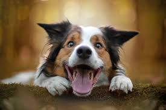
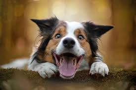
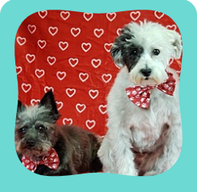
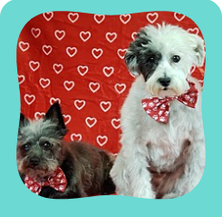

More Picutres for Your Future Dogs
Here is more choice for your future family members.

 

The Cute Dogs Need Home
Use the nationwide database of dogs looking for good homes below! Search by zip code to meet available dogs in your area. Please note, these dogs are from rescues and shelters nationwide and are not available through the ASPCA. If you live in New York City and are hoping to adopt from us, check out the dogs available at our Adoption Center.

 
